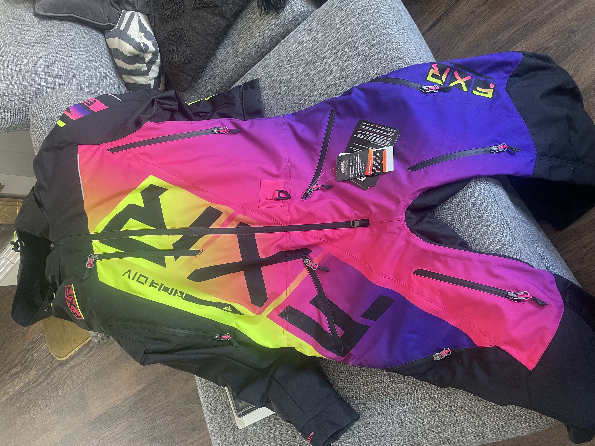
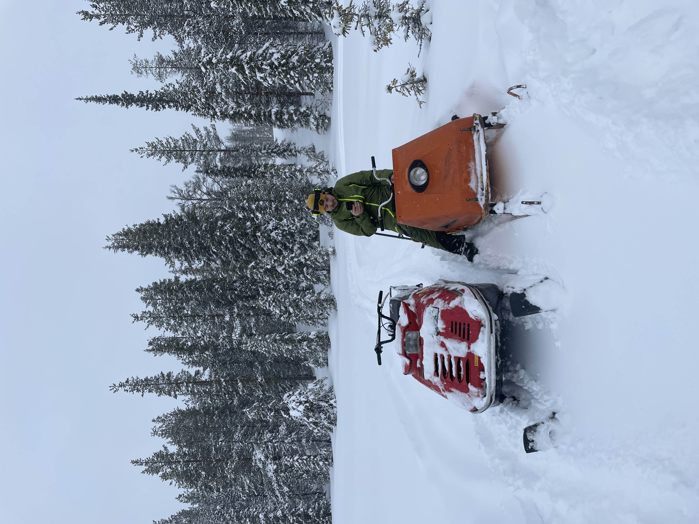

Äntligen är ljuset tillbaka!
Jag älskar att våren snart är här, eftersom den kommer med ljusare dagar och värme.
Det bästa jag vet med våren är påsken. Då brukar jag åka med min familj till stugan där åker vi skoter, pimplar och lagar mat utomhus över öppen eld. I år har jag även unnat mig en ny skoteroverall så det ska bli kul att få ge sig ut och inviga den.
Eftersom påsken var så tidig förra året var den kallare än vanligt och vi hade inte jättetur med vädret men det blev en trevlig helg ändå.
